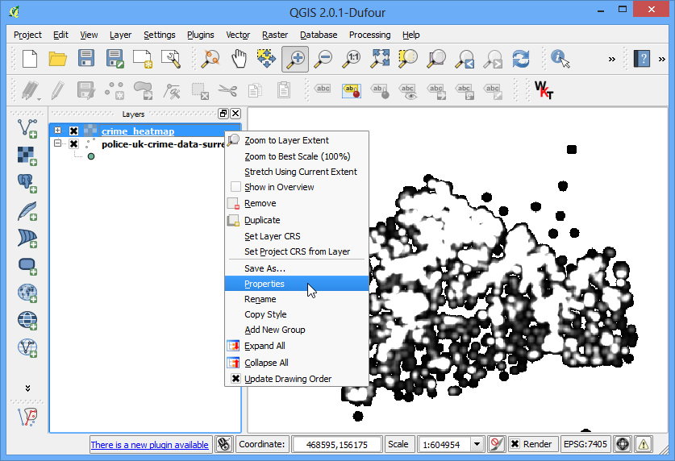

Karttadatan digitointi
[ Download PDF A4 Letter ]
Digitointi on eräs yleisimmistä yleisistä tehtävistä joita GIS käyttäjän on tehtävä. Useimmiten suuri osa GIS ajasta käytetään digitoidessa rasteridatasta vektoritasoja joita sitten käytetään analysointiin. QGIS ohjelmassa on tehokkaat näytöllä toimivat digitointi- ja muokkausominaisuudet joita tutkailemme tässä oppaassa.
Katsaus tehtävään
Käytämme topograafista rasterikarttaa ja luomme useita vektoritasoja jotka edustavat ominaisuuksia puistosta.
Muita taitoja joita tulet oppimaan
Menettely
Mene . Etsi ladattu BX24_GeoTifv1-02.tif ja klikkaa Open.

Tämä on suuri rasterikartta ja voit huomata zoomatessasi tai panoroidessasi karttaa kestää hieman aikaa kun kartta hahmottuu näytölle. QGIS tarjoaa yksinkertaisen ratkaisun tehdä rastereista paljon nopeammin latautuvia käyttäen Kuva pyramideja. QGIS luo esihahmotettuja kuvakkeita eri resoluutioilla jotka sitten esitetään koko rasterin sijasta. Tämä tekee kartalla suunnistamisesta näppärää ja herkästi reagoivaa. Klikkaa oikealla BX24_GeoTifv1-02 tasoa ja valitse Ominaisuudet.

Valitse Pyramidit välilehti. Pidä Ctrl näppäin alhaalla ja valitse kaikki resoluutiot jotka ovat Resoluutiot paneelissä. Jätä muut vaihtoehdot oletusarvoihinsa ja klikkaa Rakenna pyramidit. Kun prosessi on valmis klikkaa

Takaisin QGIS pääikkunassa, käytä Lähennä työkalua löytääksesi Hagley Park alueen Christchurchissä. Tämä puistoalueen tulemme digitoimaan.

Ennen kuin aloitamme, tulee meidän asettaa oletusarvot Digitoinnin asetukset. Mene .

Valitse välilehti Digitointi Asetukset ikkunassa. Aseta Oletus kohdistustila arvoon verteksi ja segmentti. Tämä avulla voit kohdistaa lähimpään verteksiin tai viivasegmenttiin. Suosittelen asetukseksi myös Oletus kohdistustilan toleranssi ja Hakusäde kärkipisteiden muokkaukseen asettamista pikseleihin karttayksiköiden sijasta. Tämä varmistaa että kohdistusetäisyys sailyy samana huolimatta zoomauksen asteesta. Tietokoneesi näytön resoluutiosta riippuen voit valita sopivan arvon. Klikkaa OK.

Nyt olemme valmiit aloittamaan digitoinnin. Luomme ensin teiden tason puistoalueelta. Valitse . Voi valita myös Uusi Shapefile taso... jos haluat. Spatialite on avoin tietokanta formaatti ja samnlainen kuin ESRIn geodatabase formaatti. Spatialite tietokanta sisältyy yhteen tiedostoon kovalevylläsi ja voi sisältää eri tyyppisiä spatiaalisia (piste,viiva,monikulmio) ja ei-spatiaalisia tasoja. Tämä tekee sen siirtelyn paikasta toiseen plajon helpommaksi kuin shapefile joukolla. Tässä oppaassa luomme pari monikulmio tasoa ja viivatason, joten Spatialite sopii paremmin. Voit aina ladata spatialite tason ja tallentaa sen shapefile tai missä tahansa muodossa haluatkin.

Ikkunassa Uusi Spatialite taso, klikkaa ... näppäint ja tallenna uusi spatialite tietokannan nimeltään nztopo.sqlite. Valitse Tason nimi arvoksi Roads ja valitse Viiva Tyyppi tiedon arvoksi. Pohjan topografinen kartta on EPSG:2193 - NZGD 2000 CRS, joten voimme valita saman teiden tasolle. Merkkaa Luo automaattisesti lisääntyvä primääriavain laatikko. Tämä luo tiedon pkuid attribuuttitauluun ja antaa jokaiselle ominaisuudelle automaattisesti yksilöllisen numeerisen id:n. GIS tasoa perustettaessa tulee päättää attribuuteista joita jokaisessa ominaisuudessa tulee olemaan. Koska tämä on teiden taso haluamme 2 perusattribuuttia - Nimi ja Luokka. Anna Nimi attribuutin Nimi tietoon kappaleessa Uusi ominaisuustieto ja klikkaa Lisää ominaisuustietolistaan.

Samalla tavalla luo attribuutti “Luokka” tyyppiä Teksti data. Klikkaa OK.

Kun taso on ladattu, klikkaa Vaihda muokkauksen toimintatilaa näppäintä asettaaksesi tason muokkaustilaan.

- Click the Add feature button. Click on the map canvas to add a
new vertex. Add new vertices along the road feature. Once you have digitized
a road segment, right-click to end the feature.
Muista
You can use the scroll wheel of the mouse to zoom in or out while digitizing.
You can also hold the scroll button and move the mouse to pan around.

- After you right-click to end the feature, you will get a pop-up dialog
called Attributes. Here you can enter attributes of the newly
created feature. Since the pkuid is an auto-incrementing field, you
will not be able to enter a value manually. Leave it blank and enter the
road name as it appears on the topo map. Optionally, assign a Road Class
value as well. Click OK.

- The default style of the new line layer is a thin line. Let’s change it so
we can better see the digitized features on the canvas. Right-click the
Roads layer and select Properties.

- Select the Style tab in the Layer Properties
dialog. Choose a thicker line style such as Primary from the
predefined styles. Click OK.

- Now you will see the digitized road feature clearly. Click Save
Layer Edits to commit the new feature to disk.

- Before we digitize remaining roads, it is important to update some other
settings that are important to create an error free layer. Go to
.

- In the Snapping Options dialog, check the Enable
topological editing. This option will ensure that the common boundaries
are maintained correctly in polygon layers. Also check the
Enable snapping on intersection which allows you to snap on an
intersection of a background layer.

- Now you can click Add feature button and digitize other roads
around the park. Make sure to click Save Edits after you add a
new feaure to save your work. A useful tool to help you with digitizing is
the Node Tool. Click the Node Tool button.

- Once the node tool is activated, click on any feature to show the vertices.
Click on any vertex to select it. The vertex will change the color once it
is selected. Now you can move the click and drag your mouse to move the
vertex. This is useful when you want to make adjustments after the feature
is created. You can also delete a selected vertex by clicking the
Delete key. (Option+Delete on a mac)

- Once you have finished digitizing all the roads, click the
Toggle Editing button.

- Now we will create a polygon layer representing the park boundaries. Go to
. Select the
nztopo.sqlite database from the dropdown list. Name the new layer as
Parks. Select Polygon as the Type. Create a new
attribute called Name. Click OK.

- Click the Add feature button and click on the map canvas to add
a polygon vertex. Digitize the polygon represneting the park. Make sure you
snap to the roads vertices so there are no gaps between the park polygons
and road lines. Right-click to finish the polygon.

- Enter the park name in the Attributes pop-up.

- Polygon layers offer another very useful setting called Avoid
intersections of new polygons. Go to . Check the box in the Avoid Int column in
the row for the Parks layer. Click OK.

- Now click on Add feature to add a polygon. With the Avoid
intersections of new polygons, you will be able quickly digitize a new
polygon without worrying about snapping exactly to the neighboring polygons.

- Right-click to finish the polygon and enter the attributes. Magically the
new polygon is shrunk and snapped exactly to the boundary of the neighboring
polygons! This is very useful when digitizing complex boundaries where you
need not be very precise and still have topologically correct polygon.
Click Toggle Editing to finish editing the Parks layer.

- Now it is time to digitize a buildings layer. Create a new polygon layer named
Buildings by going to .

- Once the Buildings layer is added, turn off the Parks and Roads
layer so the base topo map is visible. Select the Buildings layer and
click Toggle Editing.
- Digitizing buildings can be a cumbersome task. Also it is difficult to add
vertices manually so that the edges are perpendicular and form a rectangle.
We will use a plugin called Rectangles Ovals Digitizing to help with
this task. See Liitännäisiä käyttämään to see how to search and install
plugins. Once the Rectangles Ovals Digitizing plugin is installed, you
will see a new toolbar appear above the canvas.

- Zoom to an area with the buildings and click Rectangle by
Extent button. Click and drag the mouse to draw a perfect rectangle.
Similarly, add remaining buildings.

- You will notice that some buildings are not vertical. We will need to draw
a rectangle at an angle to match the building footprint. Click the
Rectangle from center.

- Click at the center of the building and drag the mouse to draw a vertical
rectangle.

- We need to rotate this rectangle to match the image on the topo map. The
rotate tool is available in the Advanced Digitizing toolbar.
Right-click on an empty area on the toolbar section and enable the
Advanced Digitizing toolbar.

- Click the Rotate Feature(s) button.

- Use the Select Single feature tool to select the polygon that
you want to rotate. Once the Rotate Feature(s) tool is
activated, you will see crosshairs at the center of the polygon. Click
exactly on that crosshairs and drag the mouse while holding the left-click
button. A preview of the rotated feature will appear. Let go of the mouse
button when the polygon aligns with the building footprint.

- Save the layer edits and click Toggle Editing once you finish
digitizing all buildings. You can drag the layers to change their order of
appearance.

- The digitizing task is now complete. You can play with the styling and
labelling options in layer properties to create a nice looking map from the
data you created.